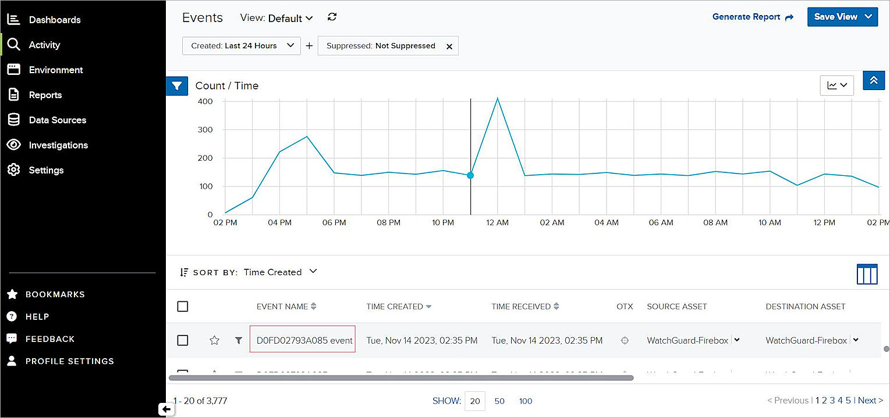

This document describes how to configure a WatchGuard Firebox to send syslog messages to AT&T Cybersecurity AlienVault USM Anywhere.
Contents
Integration Summary
These devices and services were used to test this integration:
- AlienVault USM Anywhere:
- Cloud
- Sensor Version 7.61.999
- WatchGuard Firebox:
- Version 12.10
Configuration
To complete this integration, you must first deploy AlienVault USM Anywhere. In this guide, we used the AlienVault USM Anywhere with a WatchGuard Firebox.

Before You Begin
To set up the AlienVault USM Anywhere environment, go to the AlienVault USM Anywhere Setup Guide. This document describes how to configure AlienVault USM Anywhere to work with the WatchGuard Firebox.
Set Up AlienVault USM Anywhere
To set up AlienVault USM Anywhere:
- Deploy the AlienVault USM Anywhere cloud and AlienVault USM Anywhere Sensor.
- Log in to the AlienVault USM Anywhere cloud web UI.
- (Optional) Add the assets.
A wizard appears when you log in for the first time to the AlienVault USM Anywhere cloud web UI. You can use the wizard to discover the assets or you can add assets manually.
Set Up your Firebox to Send Syslog Messages to AlienVault USM Anywhere Sensor
- Connect to your Firebox with Policy Manager or Fireware Web UI. In this example, we use Fireware Web UI.
- Select System > Logging.
- Select Syslog Server.
- Select the Send Log Messages to these Syslog Servers check box.
- Click Add.
The Syslog Server page opens.

- In the IP Address text box, type the AlienVault USM Anywhere sensor IP address. In this example, the IP address is 10.0.1.10.
- In the Port text box, type the port configured on the AlienVault USM Anywhere sensor to receive syslog sourced messages. The default port is 514.
- From the Log Format drop-down list, select Syslog.
- (Optional) Select The Time Stamp check box.
- (Optional) Select The Serial Number of the Device check box.
- Leave the default values for other settings.
- Click OK.
- Click Save.
Test the Integration
Confirm the Receipt of Syslog Messages
To confirm AlienVault USM Anywhere cloud receives the syslog messages:
- Log in to the AlienVault USM Anywhere cloud Web UI.
- Select Data Sources > Sensors.
- Select Sensor Apps > Syslog Server.
The syslog packets appear.

View Event Details
AlienVault USM Anywhere analyzes and creates an event for the Syslog messages it receives.
To view event details, from AlienVault USM Anywhere:
- Select Activity > Events.

- Select an event to show details.